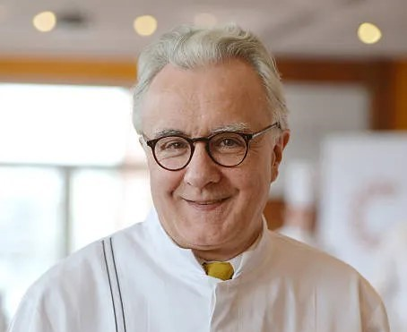

Alain Ducasse
Especialidad:
Alta cocina francesa contemporánea, con una fuerte influencia de la cocina mediterránea.
Alain es el chef con más estrellas Michelin del mundo; con 20. Distribuidas en 13 restaurantes entre Francia, Reino Unido, Macao, Tailandia y Japón.